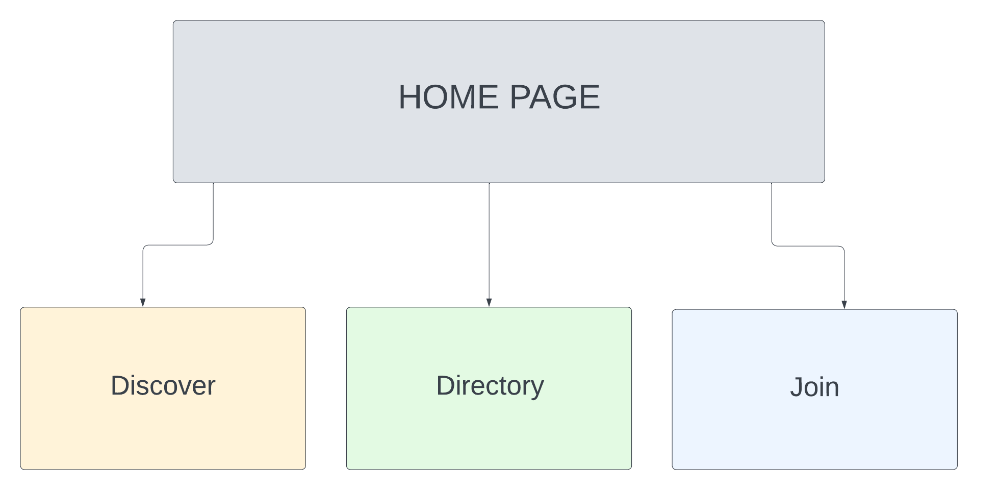
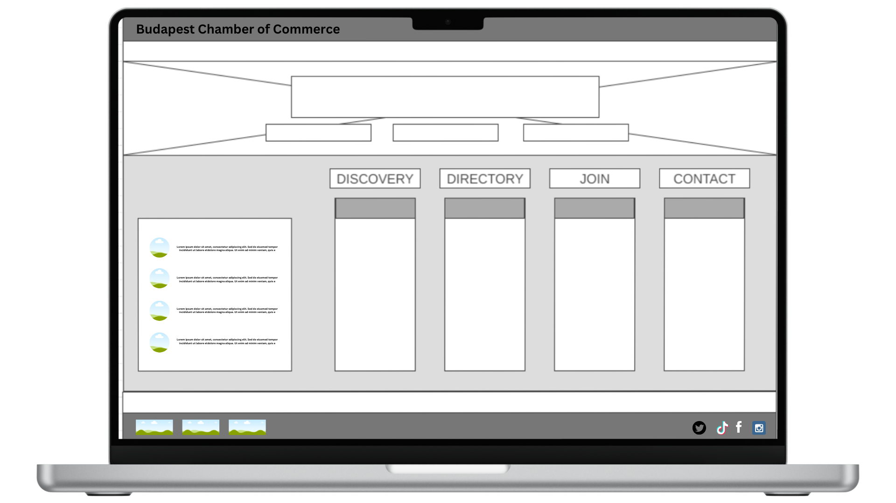
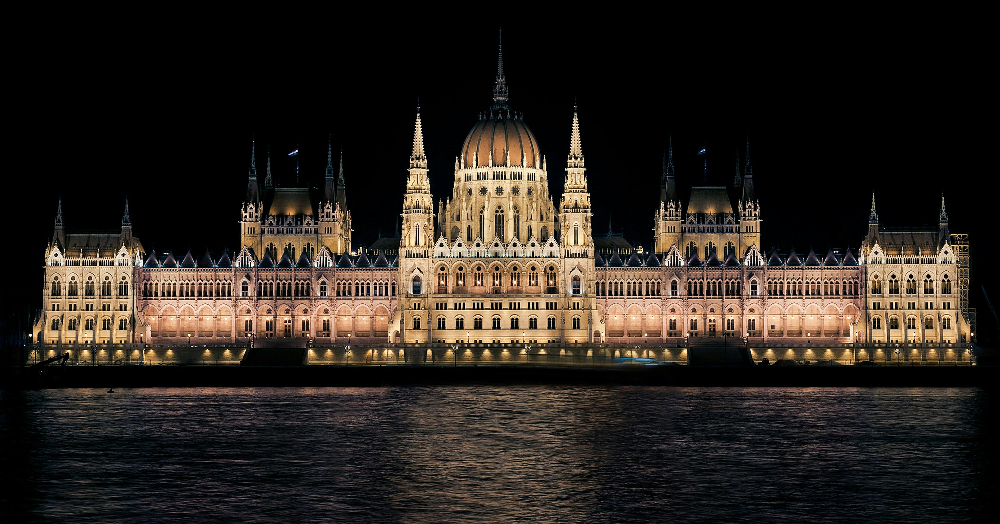
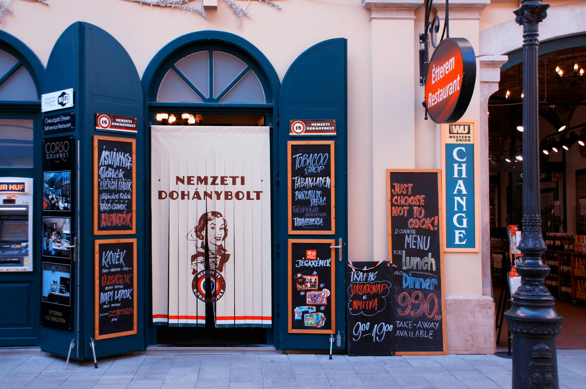
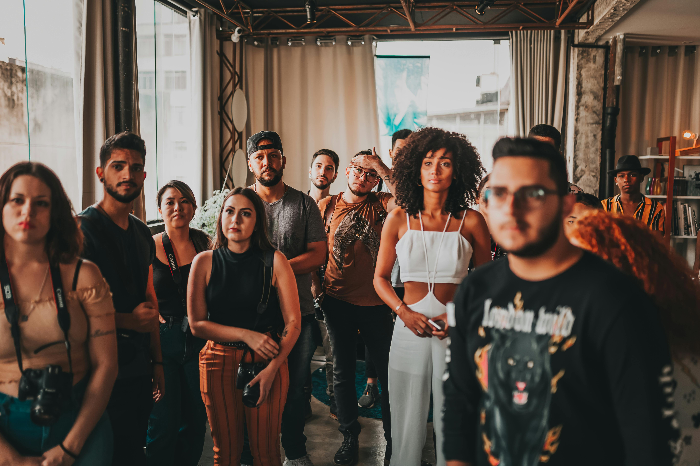

Site Name
The website is named "Budapest Chamber of Commerce" to represent the business community of Budapest, Hungary, and offer business resources and networking opportunities.
Site Purpose
This website aims to:
- Promote local and international business opportunities in Budapest.
- Provide resources for business networking, advocacy, and marketing services to foster economic growth.
- Help entrepreneurs and businesses join the Chamber of Commerce and access relevant resources.
Target Audience
The audience includes local business owners, international investors, tourists, and members of the public seeking business services in Budapest.
Color Palette
| Primary | Secondary | Accent 1 | Accent 2 |
|---|---|---|---|
| Dark Blue (#192941) | Blue (#36537D) | Yellow (#FFC61B) | White (#FFFFFF) |
Typography
- Heading Font: Roboto - Bold and modern for a professional look.
- Body Font: Open Sans - Clean and readable for longer text.
Scenarios
Common questions from visitors:
- What are the benefits of joining the Budapest Chamber of Commerce?
- Where can I find information on local businesses?
- What upcoming events and business networking opportunities are available?
Visual Sitemap

Sitemap Content Pages
Home
Discover
Directory
Join
Contact
Wireframes
Below are examples of the wireframes for mobile and desktop views:
Home Page Wireframe
Images
Images that will be used include:
- Hero Image of Budapest's skyline for the home page.
- Images of local businesses for the directory section.
- Images of members networking during events.


